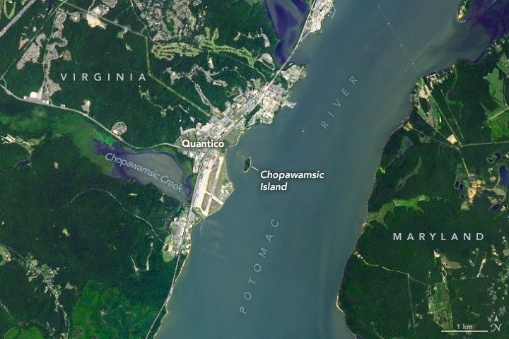

The Potomac Island Where History Took Flight
On the afternoon of May 6, 1896, a boater passing by Chopawamsic Island in Stafford, Virginia, might have seen something peculiar on the Potomac River: a spindly, insect-shaped craft with a wooden skeleton and fabric wings perched precariously on the roof of a houseboat. At 3:05 p.m., the scene grew even more bizarre. With a loud snap and whirring rattle, the contraption surged forward, propelled by a spring-loaded catapult and rolling along a wooden track on small metal wheels until it was over the waters of the Potomac.
Rather than tumbling into the river, as the 25-pound craft had done during previous attempts, it caught breezy headwinds from the south and ascended to between 70 and 100 feet (20 to 30 meters). It glided “like a great mechanical bird,” Alexander Graham Bell, witness to the history-making moment, later said. The craft, with front propellers whirring, maintained “remarkable steadiness” for more than 90 seconds during a spiraling flight that spanned more than 3,000 horizontal feet. The flight only ended when the small steam engine exhausted its fuel, and the craft descended gently into the river, undamaged.
The craft—Aerodrome No. 5—had made the world’s first successful flight of an unpiloted, engine-driven, heavier-than-air craft of substantial size. “No one could have witnessed these experiments without being convinced that the practicality of mechanical flight had been demonstrated,” Bell said. Its maker was Samuel Pierpont Langley, the secretary of the Smithsonian Institution. The map below, published by the Smithsonian in 1911, shows the path of the flight with a dotted line.
A historic map, published in 1911, shows a closer view of Chopawamsic Island. A small rectangle north of the island shows the location of the houseboat and a dotted spiraling line shows the path of the May 6, 1896 flight across the river's shallow water.
Frederick Fowle, Jr., a junior assistant at the Smithsonian, captured multiple images of the groundbreaking flight, including the photo above (right). The image on the left, taken by Bell, shows one of the first moments of an earlier flight on May 6, 1896, though this attempt failed soon after when a guy-wire connecting the wings snagged.
The OLI-2 (Operational Land Imager-2) on Landsat 9 captured the image at the top of the page, which shows Chopawamsic Island and the location of the historic flight on August 1, 2024. The private island was once a peninsula jutting out from the southern side of Chopawamsic Creek. Erosion eventually cleaved that connection, and the island grew more isolated in the 1930s when the Marine Corps reclaimed marshland and shifted the mouth of the creek south during an enlargement of the airfield at Quantico.
Today, the 13-acre (5-hectare) island still has the remains of a house and other structures that a Quantico officer once owned, but the house has been uninhabited since the 1970s. Quantico Air Base did not exist when Langley conducted his aerodrome flights, but it now takes up much of the land in Virginia near the island.
In part due to this pioneering flight, Langley became the namesake of Langley Field in 1917, which today is among the oldest continuously active air bases in the United States. Parts of the facility became NASA Langley Research Center when NASA was established in 1958.
Editor’s Note: National Aviation Day, established by President Franklin D. Roosevelt in 1939, celebrates the history and advancements of aviation on August 19.